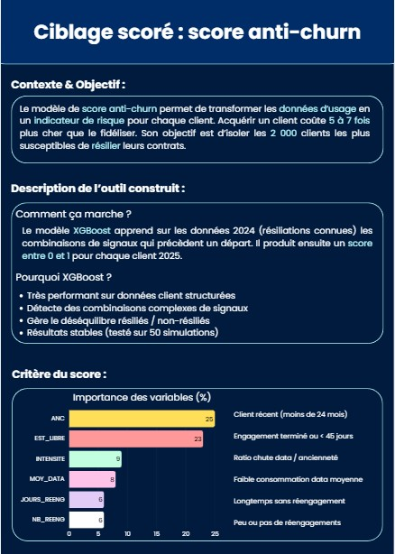
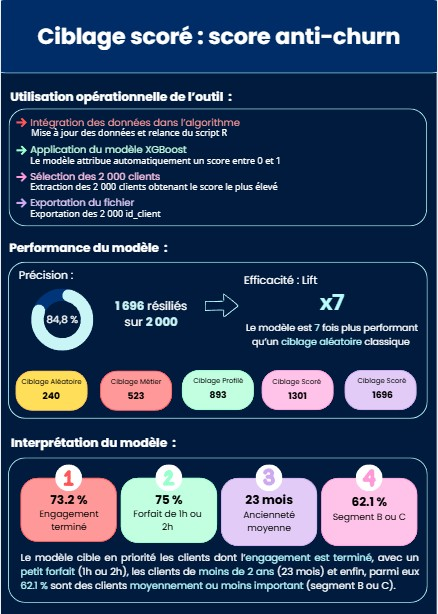

Contexte et objectif
J’ai réalisé un projet de scoring client à partir des données d’un opérateur télécom. L’objectif était d’identifier, parmi les 20 000 clients actifs présents dans la base de données, les 2 000 les plus susceptibles de résilier leur contrat selon différents critères. Ce projet vise à permettre aux équipes marketing de mettre en place des actions ciblées afin de fidéliser ces clients et de limiter le taux de résiliation.
Le projet a été mené en deux parties et s’est déroulé sur plusieurs mois, de novembre 2025 à mars 2026.
Données
Concernant les données, je me suis appuyée sur deux bases distinctes : une première issue des données télécom de l’année 2024 (composée de 40 000 clients avec des résiliations connues) pour construire le modèle, et une seconde base datant de 2025 (composée de 20 000 clients) sur laquelle le modèle a été appliqué.
Ce que nous avons fait
Lors de la première partie, l'objectif était de construire un ciblage de plus en plus performant. J'ai pour cela utilisé plusieurs méthodes différentes.
D'abord, le ciblage aléatoire. Il consiste à tirer au hasard 2 000 clients parmi les 20 000 de la base 2025. Réalisé sans aucun critère de sélection, ce ciblage capte environ 240 résiliés sur 2 000.
Le ciblage métier a été la deuxième étape. Il est réalisé à partir de critères définis manuellement ; par exemple, cibler des clients selon un type de contrat particulier ou une tranche d'âge précise. La combinaison de tous les critères permet d'obtenir une liste de 2 000 clients légèrement plus performante que celle du ciblage aléatoire.
La troisième étape était la réalisation d'un ciblage profilé. Ce ciblage s'appuie sur des analyses statistiques univariées et bivariées réalisées sur la base de données 2024, qui contient les résiliations connues. Ces analyses permettent d'identifier les caractéristiques des clients ayant le plus résilié par le passé, afin de les appliquer ensuite sur la base 2025. Ce ciblage est plus précis que les deux précédents.
Le dernier ciblage réalisé est un ciblage prédictif (ou "modélisé"). Contrairement au ciblage précédent où je devais définir les critères manuellement, j'applique ici un modèle statistique qui apprend automatiquement les combinaisons de variables prédisant le mieux les résiliations. Pour la première version, j'ai appliqué un modèle GBM (Gradient Boosting Machine) construit avec 5 variables, ce qui m'a permis d'identifier 1 301 résiliés sur ma base de 2 000. Pour la seconde version, j'ai réalisé un modèle XGBoost. Ce modèle apprend, sur les données 2024, les combinaisons de signaux qui précèdent un départ. Il produit ensuite un score entre 0 et 1 pour chaque client de 2025. C'est un modèle plus performant : il construit des centaines d'arbres de décision successifs, chacun corrigeant les erreurs du précédent, et gère le déséquilibre entre résiliés et non-résiliés. À partir de ce modèle, j'ai obtenu 1 696 résiliés, soit 7 fois plus que lors du premier ciblage.
Enfin, j'ai conçu une fiche de score de 2 pages. Ce document de synthèse présente de manière visuelle et accessible le contexte du projet, la description de l'outil, les performances obtenues, l'interprétation des résultats et les recommandations opérationnelles concrètes : qui doit agir, et à quelle fréquence recalculer les scores.
Aperçu des résultats

